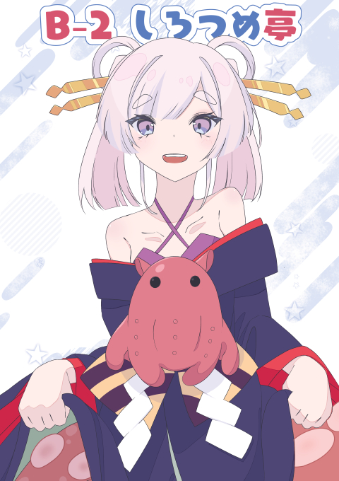

|
MENU
PICKUP
|
TOP
しろつめ亭はえいじゅん(@EijuneSound)が主宰する同人サークルです。
おしらせ
最新参加イベント  NEWS
もっと見る
PROFILE
えいじゅん(@EijuneSound) Illustrator / Composer
作業環境
・Illust: CLIP STUDIO PAINT PRO XP-PEN Artist 22……初任給で買った相棒。そろそろボロくなってきた（泣） ・Compose: Studio One 6……Studio Oneとの付き合いも10年以上か Sennheiser HD 599 SE YAMAHA NS-BP200BP GALLERY
★厳選ピックアップ★
もっと私のイラスト活動について知りたい方は→工事中
主に超かぐや姫！の二次創作を中心としたイラストを描いています。
イラストのSkebも受け付けておりますので、もしイラストを気に入っていただけた方などいらっしゃれば、是非ご依頼ください。 ※超かぐや姫！二次創作ガイドラインに基づき、超かぐや姫！キャラクターのskebについては承れませんのでご了承ください。 MUSIC
★厳選ピックアップ★
もっと私の音楽活動について知りたい方は→工事中
主に星をモチーフとした作曲を好みます。
作曲のSkebも受け付けておりますので、もし世界観を気に入っていただけた方などいらっしゃれば、是非ご依頼ください。 CONTACT
|
BANNER
・当サイトはリンクフリーです。
リンク先はhttps://shiro-tei.net/にてお願いします。
・バナーは保存してお持ち帰りください。 LINKS
|